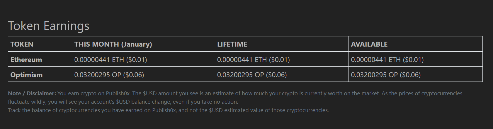
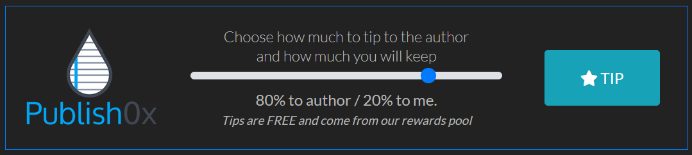

Gagnez des Cryptomonnaies en Lisant et Écrivant : Découvrez Publish0x !

Le monde des cryptomonnaies regorge d’opportunités, certaine mauvaise d'autre bonne comme Publish0x.com qui se distingue comme une plateforme innovante en récompensant ses utilisateurs pour une activité simple : lire, écrire, et partager du contenu. Que vous soyez auteur, lecteur, ou simplement curieux, ce service pourrait bien transformer votre passe-temps en source de revenus passifs.
ℹ️ Faites preuve de discernement
Comme toute plateforme ouverte, tous les contenus sur Publish0x ne sont pas forcément qualitatifs. Il est important de faire vos propres recherches et de rester critique vis-à-vis des informations que vous lisez. Prenez le temps de vérifier les sources et de ne pas vous fier aveuglément à tout ce que vous trouvez.
🚩 Je suis par exemple tombé sur des projets douteux du genre " nous utilisons votre bande passante contre rémunération " sur le papier c'est beau mais le projet, aprés recherche, n'étais clairement pas transparent, non OPEN-SOURCE. L'utilisation de notre bande passante dans ce cas, peut être trés dangereux car on ne sais pas qui l'utilise. Encore une fois faites vos propres recherche et ne soyez pas éblouie par l'appât du gain.
Aussi, une fois inscrit vous verrez dans votre dashboard une partie avec cette mention, "Obtenez des paiements pour accomplir des tâches, remplir des enquêtes, faire des révisions, installer des applications gratuites" hônnetement je vous la déconseille. En participant à ce genre d'enquête ou en jouant à ces jeu vous vous exposez à des télechargements suspect ou tout simplement inutile. Rappelez vous, rien est gratuit, si un produit est gratuit c'est que c'est vous le produit ! Pour comprendre comment cela fonctionne réferez vous à ce paragraphe. "Comment fonctionne la rémunération sur Publish0x ?"
De plus, il est essentiel de noter que les gains en cryptomonnaies sur Publish0x ne sont pas énormes. Je ne suis pas là pour vendre du rêve, mais pour partager une réelle opportunité de lier l'utile à l'agréable et la possibilité de stocker des tokens gratuitement. Continuons.
exemple ici avec mes gains de 24h aprés avoir lu une dixaine d'articles.
Qu’est-ce que Publish0x ?
Publish0x est une plateforme de publication décentralisée qui récompense les auteurs et les lecteurs avec des cryptomonnaies, Optimism ou Ethereum. Contrairement à d'autres plateformes de contenu où les créateurs peinent à être rémunérés, Publish0x utilise un système de pourboires sponsorisés en cryptos (comme OP ou ETH). Le site ne demande aucun investissement, et tout le monde peut commencer à gagner sans frais.
Quels sont les avantages de Publish0x ? ✅
- Pour les lecteurs : Recevez des pourboires simplement en lisant des articles et en engageant avec du contenu.
- Pour les auteurs : Obtenez une visibilité et recevez des récompenses directement de la part des lecteurs.
- Pour tout le monde : Une manière simple et sûre de découvrir des cryptomonnaies et de commencer à les accumuler.
Les paiements sont automatiques et sécurisés, et il est possible de retirer vos gains directement sur un portefeuille cryptographique comme MetaMask.
Comment fonctionne la rémunération sur Publish0x ?
Le système de rémunération sur Publish0x repose sur des tips gratuits que les utilisateurs distribuent aux auteurs d'articles. Voici comment cela fonctionne :
- Les utilisateurs reçoivent une allocation de pourboires ("tips") qu'ils peuvent donner gratuitement aux auteurs. - Ces tips ne proviennent pas des fonds des utilisateurs, mais de Publish0x, qui finance ce système grâce à ses partenariats ou fonds propres.
Les tokens distribués proviennent de projets blockchain partenaires qui souhaitent se promouvoir auprès de la communauté de Publish0x. Ce modèle est à la fois un outil marketing pour ces projets et un moyen de récompenser les utilisateurs.
Est-ce un prêt ou un investissement ?
Non, le système de Publish0x ne fonctionne pas comme un prêt ou un investissement. Voici pourquoi :
- Aucune mise de fonds : Les utilisateurs ne donnent pas leur propre argent pour les tips. Les tokens sont fournis gratuitement par la plateforme ou ses sponsors.
- Pas de risque financier : Contrairement à un prêt ou un staking, vous ne risquez pas de perdre de l'argent. La seule contribution est votre temps passé sur la plateforme.
Comment les utilisateurs sont-ils payés ?
Les utilisateurs accumulent des tokens en lisant, écrivant ou recevant des tips. Voici les étapes :
1. Les tokens gagnés s’accumulent sur votre compte Publish0x.
2. Une fois que le seuil de retrait est atteint, vous pouvez transférer vos gains vers un portefeuille crypto compatible, tel que MetaMask.
3. Notez que des frais de transaction peuvent s'appliquer en fonction de la blockchain utilisée. Exemple la blockchain ETH et souvent plus cher.
Pourquoi les gains sont-ils modestes ?
- Les cryptomonnaies distribuées sont souvent des tokens en phase de promotion, dont la valeur peut fluctuer selon leur adoption.
- Publish0x n’a pas vocation à rendre riche rapidement, mais propose un système simple pour gagner des cryptos tout en s’informant ou en partageant du contenu et cela fait vivre la plateforme.
Conclusion : Une opportunité sans risque
Vous êtes rémunéré sur Publish0x pour votre participation active, sans avoir à fournir de fonds ou à prendre de risque financier. Ce n'est ni un prêt, ni un investissement, mais une façon accessible et ludique de gagner des cryptomonnaies en lisant et écrivant du contenu.
Comment participer à Publish0x ?
1. Inscription :
- Rendez-vous sur Publish0x.com( ici mon lien affilié )
- L’inscription est gratuite et rapide.

2. Engagez-vous :
- Lisez des articles et apprenez sur des sujets variés (crypto, technologie, finance, etc.).
- Écrivez vos propres articles ( le temps d'attente peut être long car les places sont limité en tant qu'auteur ) pour partager vos connaissances et maximiser vos gains.
3. Collectez vos récompenses :
- À chaque interaction (lecture ou écriture), vous pouvez recevoir des pourboires sous forme de cryptomonnaies.
Comment récupérer vos cryptomonnaies ?
Pour retirer vos gains (OP ou ETH), vous aurez besoin d’un portefeuille compatible comme MetaMask. Voici comment faire :
Créer un portefeuille MetaMask
- Téléchargez l’extension MetaMask sur Firefox par exemple ( bien plus sécur que Chrome ) ou via l’application mobile.
- Créez un nouveau portefeuille :
- ✅ Notez et sauvegardez votre seed phrase en lieu sûr.
- 🔐 Créez un mot de passe sécurisé.
- Une fois le portefeuille configuré, ajoutez un réseau compatible avec les tokens que vous souhaitez recevoir (Ethereum Mainnet, Arbitrum, etc.).
Retirer vos récompenses :
- Connectez votre adresse MetaMask à Publish0x.
- Suivez les instructions pour transférer vos gains sur votre portefeuille.
Rejoignez Publish0x dès Maintenant !
Prêt à transformer votre temps en gains ? Voici comment commencer dès aujourd'hui :
- Cliquez ici pour accéder à Publish0x et créer votre compte gratuitement.
- Explorez des centaines d'articles inspirants et commencez à accumuler vos premières cryptos.
- Recevez vos récompenses directement sur votre portefeuille MetaMask.
👉 Ne ratez pas cette opportunité unique d'apprendre et de gagner en même temps. Rejoignez la communauté Publish0x dès aujourd'hui et commencez à bâtir votre portefeuille cryptographique dès maintenant !
Avec Publish0x, vous êtes aux commandes de votre aventure cryptographique. Alors, qu'attendez-vous pour démarrer ? 🚀